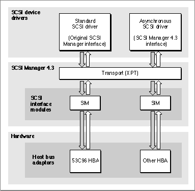

About SCSI Manager 4.3
The SCSI Manager 4.3 application program interface (API) is modeled on the Common Access Method (CAM) software interface being developed by ANSI committee X3T9. The SCSI Manager 4.3 interface, however, includes Apple-specific differences required for compatibility with the original SCSI Manager and the Macintosh Operating System.The CAM specification defines the operation of three functional units--the transport (XPT), the SCSI interface module (SIM), and the host bus adapter (HBA). The XPT is the entry point to SCSI Manager 4.3 and is responsible for passing requests to the appropriate SIM. Each SIM is responsible for managing the HBA for a particular bus.
In addition to the XPT, SCSI Manager 4.3 includes a SIM for managing the NCR 53C96 SCSI controller used in high-performance Macintosh computers. Other SIM modules and HBA hardware can be added at any time by Apple or third-party developers. For example, a NuBus or PDS expansion card can provide an additional SCSI bus, which device drivers can access through SCSI Manager 4.3 in exactly the same way as the internal bus. Figure 4-1 shows the relationship between device drivers, SCSI Manager 4.3, and the SCSI controller hardware.
Figure 4-1 The SCSI Manager 4.3 architecture

The features and capabilities of SCSI Manager 4.3 include
- SCSI-2 compliance.All mandatory SCSI-2 messages and protocol actions are supported as defined for an initiator. Optional SCSI-2 hardware features, such as fast and wide transfers, are anticipated by the SCSI Manager 4.3 architecture and supported by the interface.
- Concurrent asynchronous I/O.SCSI Manager 4.3 handles both synchronous and asynchronous I/O requests. In addition, it allows multiple device drivers to issue multiple requests and attempts to overlap the operations as much as possible.
- Hardware-independent programming interface.A new hardware-independent interface allows device drivers to work with any SCSI Manager 4.3-compatible host bus adapter (HBA), including those from third-party developers.
- Direct memory access (DMA).SCSI Manager 4.3 automatically takes advantage of the DMA capabilities available in high-performance Macintosh models. Direct memory access allows the computer to perform other functions while data bytes are transferred to or from the SCSI bus.
- Support for multiple buses.SCSI Manager 4.3 supports any number of SCSI buses, each with a full complement of devices. For example, on Macintosh computers with dual SCSI buses (such as the Power Macintosh 8100/80), up to 14 SCSI devices can be attached. In addition, developers can design NuBus or PDS expansion cards that offer enhanced SCSI bus capabilities.
- Support for multiple logical units on each target.SCSI Manager 4.3 allows access to all logical units on a target device. Logical units are treated as separate entities, and I/O requests are queued according to logical unit number (LUN).
- Disconnect/reconnect.This capability helps maximize SCSI bus utilization by allowing a device to disconnect and release control of the SCSI bus while it processes a command, then reconnect when it is ready to complete the transaction. This allows a device driver to submit requests to multiple targets so that those requests are executed in parallel. For example, the driver for a disk array can issue a request to one disk, which disconnects, then issue another request to a different disk. The two disks can perform their seek operations simultaneously, reducing the effective seek time.
- Parity detection.SCSI Manager 4.3 detects and handles parity errors in data received from a target. For compatibility reasons, this feature can be disabled on a per-transaction basis. (All Macintosh computers generate parity for write operations, but the original SCSI Manager does not detect parity errors in incoming data.)
- Autosense.SCSI Manager 4.3 automatically sends a
REQUEST SENSEcommand in response to aCHECK CONDITIONstatus and retrieves the sense data. This feature can be disabled.- Compatibility.SCSI Manager 4.3 supports all original SCSI Manager functions and TIB instructions, except for
scComp(compare).Transport
The SCSI Manager 4.3 transport (XPT) provides the software interface to applications and device drivers, and is responsible for
- providing the means to register host bus adapters, their characteristics, and their respective SCSI interface modules
- routing requests to the proper SCSI interface module
- notifying the caller when a request is complete
- providing the high-level facilities for emulating the original SCSI Manager interface. This consists of maintaining a translation table of SCSI ID numbers and their corresponding host bus adapters, and directing original SCSI Manager requests accordingly
- isolating SCSI interface modules from certain operating system requirements, such as those imposed by the Virtual Memory Manager
SCSI Interface Modules
A SCSI interface module (SIM) provides the software interface between the transport (XPT) and a host bus adapter (HBA) in SCSI Manager 4.3. The SIM processes and executes SCSI requests directed to it by the XPT and is responsible for handling all aspects of a SCSI transaction, including
- maintaining the request queue, including freezing and unfreezing for error handling as necessary, and queuing multiple operations for all logical units on all target devices
- managing the selection, disconnection, reconnection, and data pointers of the SCSI protocol
- assigning tags for tag queuing, if supported
- managing the HBA hardware
- identifying abnormal conditions on the SCSI bus and performing error recovery
- providing a time-out mechanism for tracking SCSI command execution
- emulating original SCSI Manager functions, if supported
System Performance
In terms of maximum data transfer (bytes-per-second) over the internal SCSI bus, SCSI Manager 4.3 performs similarly to the original SCSI Manager. This aspect of performance is limited by the capability of the SCSI controller hardware and can be improved by adding a faster HBA.In terms of overall system performance, the asynchronous capability of SCSI Manager 4.3 can provide significant benefits by allowing application code to regain control of the system while a SCSI transaction is in progress. This concurrency is a key benefit of asynchronous operation. In addition, support for disconnect/reconnect allows applications to initiate multiple I/O requests on multiple targets simultaneously, allowing further increases in throughput.
Multiple bus systems offer the added benefit of concurrency between buses. If DMA is used for both buses, their data transfer periods can be overlapped as well.
Compatibility
All the functions provided by the original SCSI Manager are emulated by the SCSI Manager 4.3 XPT and SIM for the internal SCSI bus. This level of compatibility is optional for third-party SIM/HBA developers. When a SIM registers its HBA with the SCSI Manager 4.3 XPT, the SIM specifies whether or not it is able to emulate the original SCSI Manager functions by setting theoldCallCapablefield of the SIM initialization record.When an application or device driver calls the original SCSI Manager function
SCSIGet, the XPT sets a flag preventing any additionalSCSIGetfunction calls but performs no other action. Upon receipt of aSCSISelectfunction call, the XPT issues aSCSIOldCallrequest to the appropriate SIM, which places the request in its queue. Once theSCSIOldCallrequest begins execution, the SIM emulates subsequent original SCSI Manager function calls passed to it by the XPT. During this emulation, no new requests are processed until the entire transaction is completed and theSCSICompletefunction returns. AnySCSIGetorSCSISelectrequests received after the start of aSCSIOldCallrequest are rejected and return thescMgrBusyErrcode.While the original SCSI Manager emulation is in progress, asynchronous requests made by other applications or device drivers (using SCSI Manager 4.3 functions) are queued but do not execute until the emulation is complete. Requests to other SIMs are not affected and continue to execute normally.
The SCSIReset function resets only those buses that are capable of handling original SCSI Manager functions. The
SCSIStatfunction returns results as accurate as possible for the SIM/HBA handling the request.The
scComp(compare) TIB instruction is not supported by SCSI Manager 4.3 because DMA transfers do not permit this type of compare operation. This should pose few compatibility problems because this instruction is rarely used. You can, of course, write your own code to compare data on a SCSI device with data in memory.
- WARNING
- Applications or device drivers that bypass the SCSI Manager for any part of a transaction are not supported and will interfere with the operation of SCSI Manager 4.3.
© Apple Computer, Inc.
3 JUL 1996